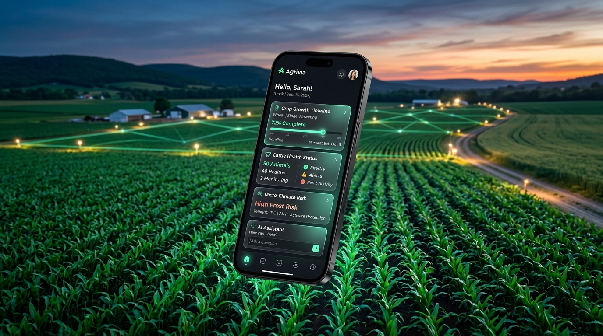
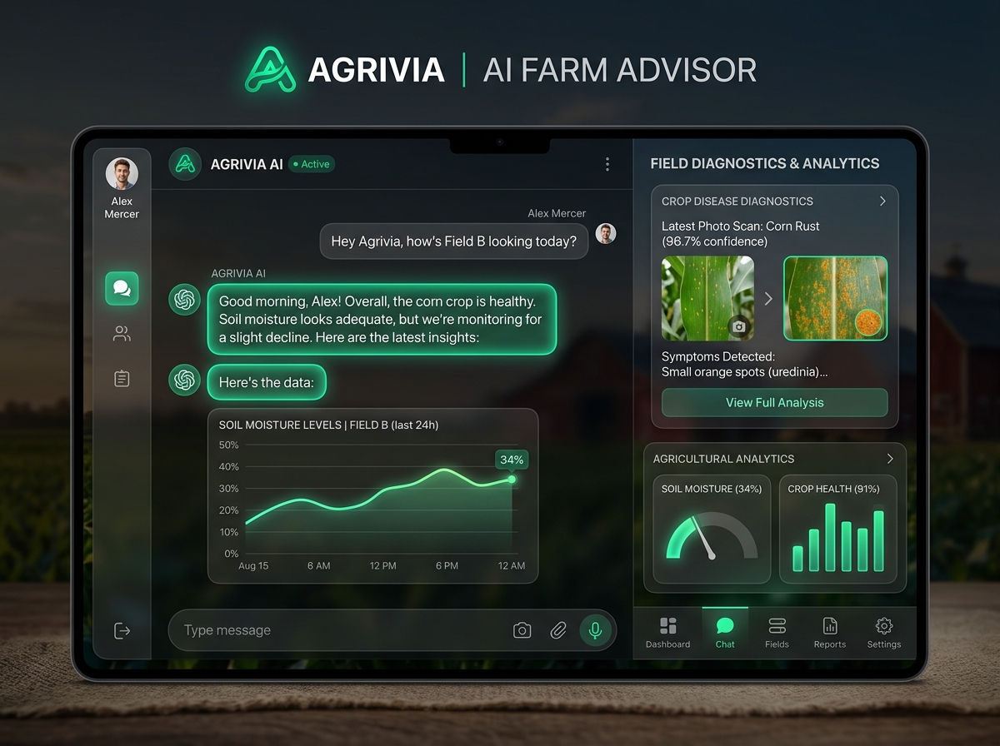

Soil
Soil pens and moisture sensors
Handheld probes versus a probe you leave in a bed, and when a finger test is enough.
Hobby farms · Homesteads · Gardens · Livestock
Independent primers for raised beds and for animals — cattle, goats, sheep, pigs, horses, and poultry. Soil, fencing, water, heat, and irrigation at homestead scale. Read the guides or ask the on-site advisor. Separate iOS and Android apps are being built and are not in the App Store or Google Play yet.

The guides assume a backyard plot, a few acres, a small herd or flock — not a commercial pivot or a 500-head feedlot.
Questions go to Agrivia’s existing advisory API. This website uses the General category and a browser-only ID. It does not load a farm profile or GPS. Replies are guidance, not a vet or extension visit.
Open the advisor
Simple arithmetic for beds plus cattle, goats, sheep, pigs, horses, or poultry. It is not your harvest, not a guarantee, and not Agrivia customer results.
Formula: beds × a crop factor (garden $60, mixed homestead $50, berries $40, pasture $25) + livestock head × $40 + beds × $12 for drip. Rounded. Head count is cattle, goats, sheep, pigs, horses, or birds — pick what you keep. This is arithmetic, not a forecast for your place.
Buying criteria for gardens and for cattle, goats, sheep, and poultry. Educational overviews, not lab rankings.
Handheld probes versus a probe you leave in a bed, and when a finger test is enough.
Joules, solar vs plug-in, and grounding so a paddock or chicken run holds a pulse.
Cloth shade, water space, and coop air before misters.
Clock timers, soil skip, and weather skip — without a pivot panel.
Cattle tanks, poultry drinkers, refill rate, and what fails when the power drops.
Light, scale, and notes so extension (or chat) can see what you see.
This website is the live publication — guides, advisor, and calculator. Separate iOS and Android apps are being built. Email if you want a note when new guides go up, or when those apps are publicly listed.
Same advisory API as the apps. Try questions about raised beds, a sick tomato leaf, cattle shade, or poultry netting. Guidance only — confirm with local extension or a vet.
Guidance only, not a diagnosis. Confirm treatment locally. Website chat is rate-limited so the farm API stays available for the app.